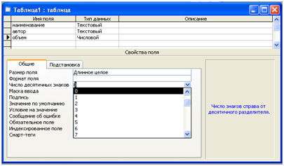
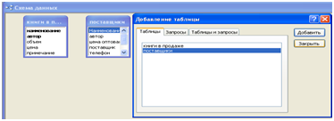

ПРАКТИЧЕСКАЯ РАБОТА №18.
Тема: «Создание базы данных средствами MSAccess»
Цель работы: Освоить основные приемы создания двухтабличной базы данных и отбора данных.
Задача. Руководитель торгового предприятия, реализующего научную литературу, заказал разработку базы данных, основанной на двух таблицах. Одна таблица содержит данные, которые могут отображаться для клиентов при оформлении закупки, — в ней указаны розничные цены на книги. Вторая таблица предназначена для анализа результатов деятельности предприятия — в ней содержатся закупочные, оптовые цены и краткая информация о поставщиках (покупатели не имеют доступа к данным этой таблицы).
Содержание работы:
- Создание базовых таблиц: ключевой таблицы «Книги в продаже» и не ключевой «Поставщики».
- Создание межтабличных связей.
- Создание запроса на выборку: отобрать книги, имеющих объем не менее 400 страниц при цене менее 80 рублей.
- Создание запроса с параметром: отобрать издания, предельную цену которых пользователь задает сам при запуске запроса.
Технология выполнение работы:
Задание 1. Создание базовых таблиц.
1. Запустите программу MSAccess’2000/2003. (Пуск - Программы - MicrosoftAccess).
2. В окне MicrosoftAccess выберите пункт меню Файл/Создать > Новая база данных.
3. В окне Файл новой базы данных выберите вашу рабочую папку (например: диск С, папку Group, 05ФК-2, 05БУА 3) и дайте файлу имя: Книготорговля. Убедитесь, что в качестве типа файла выбрано Базы данных MicrosoftAccess, и щелкните на кнопке Создать. Откроется окно новой базы — Книготорговля.
4. Откройте панель Таблицы (открыта по умолчанию).
5. Дважды щелкните на значке Создание таблицы в режиме конструктора — откроется бланк создания структуры таблицы.
6. Для первой таблицы введите следующие поля:
| Имя поля | Тип поля |
Наименование |
Текстовый |
Автор |
Текстовый |
Объем |
Числовой |
Цена |
Денежный |
Примечание |
МЕМО |
7. Щелкните на поле Объем. В нижней части бланка задайте свойство Число десятичных знаков равным 0.

8. Для связи с будущей таблицей поставщиков надо задать ключевое поле. На уникальность может претендовать поле Наименование, но в больших базах данных возможно появление разных книг с одинаковым названием. Поэтому мы используем комбинацию полей Наименование и Автор. Выделите оба поля в верхней части бланка (выделение произведите слева от наименований полей при нажатой клавише SHIFT). Щелчком правой кнопки мыши откройте контекстное меню и выберите в нем пункт Ключевое поле.
9. Закройте окно Конструктора. При закрытии окна дайте таблице имя Книги в продаже.
10. Повторив действия пунктов 5-9, создайте таблицу Поставщики, в которую входят следующие поля:
| Имя поля | Тип поля |
Наименование |
Текстовый |
Автор |
Текстовый |
Цена оптовая |
Денежный |
Поставщик |
Текстовый |
Телефон |
Текстовый |
Адрес |
Текстовый |
Примечание |
Мемо |
Обратите внимание на то, что поле номера телефона является текстовым, несмотря на то что обычно номера телефонов записывают цифрами. Это связано с тем, что они не имеют числового содержания. Номера телефонов не сравнивают по величине, не вычитают из одного номера другой и т. д. Это типичное текстовое полe.
Ключевое поле можно не задавать — для текущей задачи оно не требуется.
11. В окне Книготорговля: база данных откройте по очереди созданные таблицы и наполните их экспериментальным содержанием (10 записей). Закончив работу, закройте таблицы.
ВЫВОД. Мы научились создавать таблицы базы данных, задавать их структуру, выбирать типы полей и управлять их свойствами. Мы также освоили приемы наполнения таблиц конкретным содержанием.
Задание 2. Создание межтабличных связей
1. Разыщите на панели инструментов кнопку Схема данных. Если есть сложности, найдите команду строки меню: Сервис – Схема данных. Воспользуйтесь любым из этих средств, чтобы открыть окно Схема данных. Одновременно с открытием этого окна открывается диалоговое окно Добавление таблицы, на вкладке Таблицы которого можно выбрать таблицы, между которыми создаются связи.
2. Щелчком на кнопке Добавить выберите таблицы Книги в продаже и Поставщики — в окне Схема данных откроются списки полей этих таблиц. Для выхода из режима добавления таблиц нажмите кнопку Закрыть.
3. При нажатой клавише SHIFT выделите в таблице Книги в продаже два поля: Наименование и Автор.
4. Перетащите эти поля на список полей таблицы Поставщики. При отпускании кнопки мыши автоматически откроется диалоговое окно Изменение связей.
5. На правой панели окна Изменение связей выберите поля Наименование и Автор таблицы Книги в продаже, включаемые в связь. Не устанавливайте флажок Обеспечение целостности данных — в данном упражнении это не требуется, но может препятствовать постановке учебных опытов с таблицами.

8. Закройте диалоговое окно Изменение связей и в окне Схема данных рассмотрите образовавшуюся связь. Убедитесь в том, что линию связи можно выделить щелчком левой кнопки мыши, а щелчком правой кнопки мыши открывается контекстное меню, позволяющее разорвать связь или отредактировать, ее;
9. Закройте окно Схема данных.
Задание3. Создание запроса на выборку
Создадим запрос на выборку книг, имеющих объем не менее 400 страниц при цене менее 80 рублей.
1. В окне Книготорговля: база данных откройте панель Запросы. Дважды щелкните на значке Создание запроса в режиме Конструктора — откроется бланк запроса по образцу. Одновременно с ним откроется диалоговое окно Добавление таблицы.
2. В окне Добавление таблицы выберите таблицу Книги в продаже и щелкните на кнопке Добавить. Закройте окно Добавление таблицы.

3. В списке полей таблицы Книги в продаже выберите поля, включаемые в результирующую таблицу: Наименование, Автор, Объем, Цена. Выбор производите двойными щелчками на именах полей.
4. Задайте условие отбора для поля Объем. В соответствующую строку введите: >400. Из таблицы будут выбираться не все издания, а только те, объем которых превышает 400 страниц.
5. Задайте условие отбора для поля Цена. В соответствующую строку введите: <80. Теперь из таблицы будут выбираться только издания, имеющие цену менее 80 рублей.
6. Закройте бланк запроса по образцу. При закрытии запроса введите его имя — Выбор изданий.
7. В окне Книготорговля: база данных откройте только что созданный запрос и рассмотрите результирующую таблицу. Ее содержательность зависит от того, что было введено в таблицу Книги в продаже при ее наполнении. Если ни одно издание не соответствует условию отбора и получившаяся результирующая таблица не имеет данных, откройте базовые таблицы и наполните их модельными данными, позволяющими проверить работу запроса.
8. По окончании исследований закройте все открытые объекты.
Задание 4. Создание запросов «с параметром»
Выше мы рассмотрели, как действует условие отбора, но должны отметить его существенный недостаток. Пользователь базы данных работает с запросами, которые ему подготовил разработчик. Если, например, разработчик предусмотрел запрос, отбирающий издания, имеющие цену менее 80 рублей, то пользователь базы уже не в состоянии отобрать книги, цена которых менее 150 рублей, поскольку у него нет соответствующего запроса.
Специальный тип запросов, называемый запросами «с параметром», позволяет пользователю самому ввести критерий отбора данных на этапе запуска запроса. Этим приемом обеспечивается гибкость работы с базой.
Создадим простой запрос, позволяющий отбирать издания, предельную цену которых пользователь может задать сам при запуске запроса.
1. В окне Книготорговля: база данных откройте панель Запросы. Дважды щелкните на значке Создание запроса в режиме Конструктора — откроется бланк запроса по образцу.
2. Согласно предыдущему упражнению создайте запрос на выборку, основанный на таблице Книги в продаже и Поставщики, в который войдут следующие поля:
• Наименование;
• Автор;
• Цена;
• Поставщик.
3. Строку Условие отбора для поля Цена надо заполнить таким образом, чтобы при запуске запроса пользователь получал предложение ввести нужное значение. Текст, обращенный к пользователю, должен быть заключен в квадратные скобки. Если бы мы хотели отобрать книги, цена которых больше 100 рублей, мы бы написали: >100. Если бы нам были нужны книги дешевле 80 рублей, мы бы написали <80. Но если мы хотим дать пользователю возможность выбора, мы должны написать: < [Введите максимальную цену].
6. Закройте запрос. При закрытии сохраните его под именем Выбор книг.
7. В окне Книготорговля: база данных откройте панель Запросы и запустите запрос Выбор книг — на экране появится диалоговое окно Введите значение параметра .
8. Введите какое-либо число и щелкните на кнопке ОК. В зависимости от того, что реально содержится в таблице Книги в продаже, по результатам запроса будет сформирована результирующая таблица.
9. Закройте все объекты базы данных.